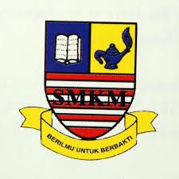

| About Me | Personal Detail | Education | Personal Interest | Hometown | Friends | Game | Gallery |
Tabika Kemas
Same as majority of Malaysian kid,I'm getting early education at 5 years old at Tabika Kemas Sungai Gelam
Sekolah Menengah Kebangsaan Merbok
After end of my primary school at SKSMS, I started my secondary school at Sekolah Menengah Kebangsaan Merbok(SMKM). I'm study at SMK Merbok from 2012 untill 2016 (form 1 to form 5. The school are located at Merbok,Kedah and only 4 km from my home.
Form 5 2016
After get SPM result,it's hard time for me to choose the next step to do in my life. I have choose to take form 6 at SMK Merbok.
Sekolah Kebangsaan Sultan Mudzaffar Shah
I get early education at Sekolah Kebangsaan Sultan Mudzaffar Syah(SKSMS) from 2006-2011. This school are located at Kampung Bujang,Bedong,Kedah.This school is one of the biggest reputation school at Kedah. The school are only 300 meter from my home.
(Form 6)Sekolah Menengah Kebangsaan Merbok
With lovely teacher and friends, my study at Form 6 bring much of joyful to me.
Sekolah Kebangsaan Sultan Mudzaffar Shah
I get early education at Sekolah Kebangsaan Sultan Mudzaffar Syah(SKSMS) from 2006-2011. This school are located at Kampung Bujang,Bedong,Kedah.This school is one of the biggest reputation school at Kedah. The school are only 300 meter from my home.
(Form 6)Sekolah Menengah Kebangsaan Merbok
With lovely teacher and friends, my study at Form 6 bring much of joyful to me.
UITM Kedah

After pass on STPM, I choose to further my study at degree level. I have apply for some University and my sustenance I have get offer from University at my home town,UITM Kedah.I'm already semester 3 student at UITM Kedah.
Copyright © 202O Muhammad Fakrul Najzmi Bin Abu Bakar
Recommended Browser Google Chrome Resolution 1366x768
Last Updated 19 DECEMBER 2020